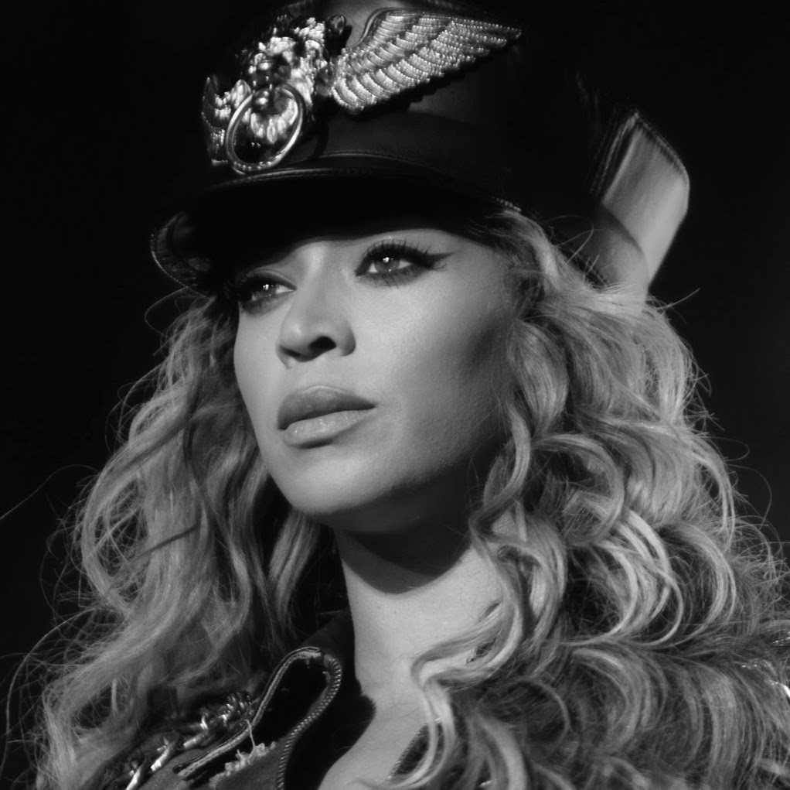

Music
Music is an art form, social activity or cultural activity whose medium is sound and silence. The common elements of music are pitch, rhythm, dynamics, and the sonic qualities of timbre and texture .
Types of music
{kind=link}
Bessie Smith. BLUES is originated in African-American communities in the "Deep South" of the United States around the end of the 19th century.The genre developed from a fusion of traditional African music and European folk music,that incorporated spirituals, work songs, field hollers, shouts and chants, and rhymed simple narrative ballads.
Ludwig Van Beethoven. CLASSICAL is produced or rooted in the traditions of Western music, including both liturgical (religious) and secular music. during the late eighteenth and early nineteenth centuries, characterized by the development of the sonata by such composers as Mozart. In popular use, however, the term is used to mean any serious art music as distinct from jazz,pop, or folk.

{kind=link}
Brad Paisley. COUNTRY music is a genre of American popular music that originated in the Southern United States in the 1920s.It takes its roots from the southeastern genre of American folk music and Western music. It is a mixture of ballads and dance tunes played characteristically on fiddle, banjo, guitar, and pedal steel guitar.
Eminem. RAP is "spoken or chanted rhyming lyrics". The components of rapping include "content", "flow" (rhythm and rhyme), and "delivery".Rapping is distinct from spoken-word poetry in that it is performed in time to a beat.
{kind=link}

{kind=link}
Beyonce. RHYTHM AND BLUES, often abbreviated as R&B or RnB, is a genre of popular African-American music that originated in the 1940s.Lyrics focus heavily on the themes of triumphs and failures in terms of relationships, freedom, economics, aspirations, and sex.
Taylor Swift. POP is a genre of popular music that originated in its modern form in the Western world during the 1950s and 1960s, deriving from rock and roll.Pop music is eclectic, and often borrows elements from other styles such as urban, dance, rock, Latin, and country.

And other like : Electronic, Jazz, Latin, Reggae, Avant-garde, Rock, Opera and Folk.